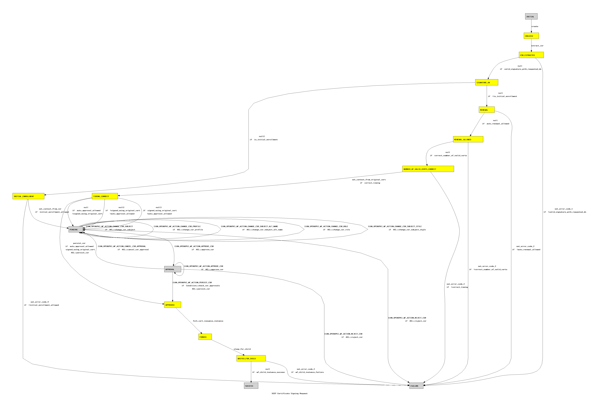

<%attr>
title => 'OpenXPKI workflows graphical representation'
</%attr>

<h1>OpenXPKI workflows' graphical representation</h1>
<h2> Workflow SCEP Certificate Signing Request</h2>

<p>
Autorun states are yellow.
You may need to pan or scroll to view a picture.
</p>


